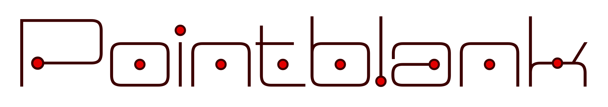
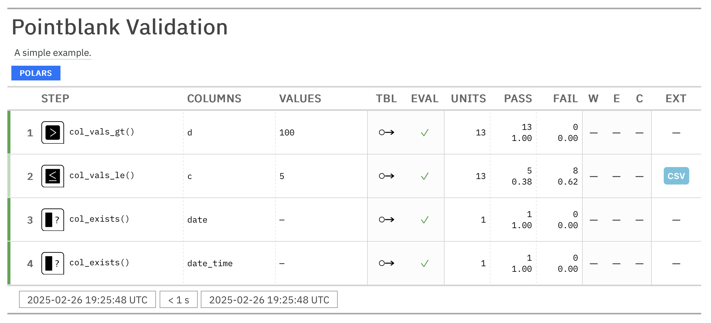

Find out if your data is what you think it is
Pointblank is a table validation and testing library for Python. It helps you ensure that your tabular data meets certain expectations and constraints and it presents the results in a beautiful validation report table.
Getting Started
Let’s take a Polars DataFrame and validate it against a set of constraints. We do that by using the Validate class along with adding validation steps:
import pointblank as pb
validation = (
pb.Validate(data=pb.load_dataset(dataset="small_table")) # Use Validate() to start
.col_vals_gt(columns="d", value=100) # STEP 1 |
.col_vals_le(columns="c", value=5) # STEP 2 | <-- Build up a validation plan
.col_exists(columns=["date", "date_time"]) # STEPS 3 & 4 |
.interrogate() # This will execute all validation steps and collect intel
)
validation
The rows in the validation report table correspond to each of the validation steps. One of the key concepts is that validation steps can be broken down into atomic test cases (test units), where each of these test units is given either of pass/fail status based on the validation constraints. You’ll see these tallied up in the reporting table (in the UNITS, PASS, and FAIL columns).
The tabular reporting view is just one way to see the results. You can also obtain fine-grained results of the interrogation as individual step reports or via methods that provide key metrics. It’s also possible to use the validation results for downstream processing, such as filtering the input table based on the pass/fail status of the rows.
On the input side, we can use the following types of tables:
- Polars DataFrame
- Pandas DataFrame
- DuckDB table
- MySQL table
- PostgreSQL table
- SQLite table
- Parquet
To make this all work seamlessly, we use Narwhals to work with Polars and Pandas DataFrames. We also integrate with Ibis to enable the use of DuckDB, MySQL, PostgreSQL, SQLite, Parquet, and more! In doing all of this, we can provide an ergonomic and consistent API for validating tabular data from various sources.
Features
Here’s a short list of what we think makes Pointblank a great tool for data validation:
- Flexible: We support tables from Polars, Pandas, Duckdb, MySQL, PostgreSQL, SQLite, and Parquet
- Beautiful Reports: Generate beautiful HTML table reports of your data validation results
- Functional Output: Easily pull the specific data validation outputs you need for further processing
- Easy to Use: Get started quickly with a straightforward API and clear documentation examples
- Powerful: You can make complex data validation rules with flexible options for composition
Installation
You can install Pointblank using pip:
pip install pointblankGetting in Touch
If you encounter a bug, have usage questions, or want to share ideas to make this package better, please feel free to file an issue.
Wanna talk about data validation in a more relaxed setting? Join our Discord server! This is a great option for asking about the development of Pointblank, pitching ideas that may become features, and just sharing your ideas!

Contributing to Pointblank
There are many ways to contribute to the ongoing development of Pointblank. Some contributions can be simple (like fixing typos, improving documentation, filing issues for feature requests or problems, etc.) and others might take more time and care (like answering questions and submitting PRs with code changes). Just know that anything you can do to help would be very much appreciated!
Please read over the contributing guidelines for information on how to get started.
Roadmap
There is much to do to make Pointblank a dependable and useful tool for data validation. To that end, we have a roadmap that will serve as a guide for the development of the library. Here are some of the things we are working on or plan to work on in the near future:
- more validation methods to cover a wider range of data validation needs
- easy-to-use but powerful logging functionality
- messaging actions (e.g., Slack, emailing, etc.) to better react to threshold exceedances
- additional functionality for building more complex validations via LLMs (extension of ideas from the current
DraftValidationclass) - a feature for quickly obtaining summary information on any dataset (tying together existing and future dataset summary-generation pieces)
- ensuring there are text/dict/JSON/HTML versions of all reports
- supporting the writing and reading of YAML validation config files
- a cli utility for Pointblank that can be used to run validations from the command line
- complete testing of validations across all compatible backends (for certification of those backends as fully supported)
- completion of the User Guide in the project website
- functionality for creating and publishing data dictionaries, which could: (a) use LLMs to more quickly draft column-level descriptions, and (b) incorporate templating features to make it easier to keep descriptions consistent and up to date
If you have any ideas for features or improvements, don’t hesitate to share them with us! We are always looking for ways to make Pointblank better.
Code of Conduct
Please note that the Pointblank project is released with a contributor code of conduct.
By participating in this project you agree to abide by its terms.
📄 License
Pointblank is licensed under the MIT license.
© Posit Software, PBC.
🏛️ Governance
This project is primarily maintained by Rich Iannone. Other authors may occasionally assist with some of these duties.